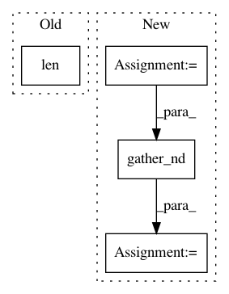

8a801031c5a5f34f5d83319aa99a9e0889bb56a1,gpflow/transforms.py,LowerTriangular,backward_tensor,#LowerTriangular#Any#,392
Before Change
def backward_tensor(self, y):
N = tf.cast(tf.sqrt(tf.size(y) / self.num_matrices), tf.int32)
reshaped = tf.reshape(y, (N, N, self.num_matrices))
size = len(reshaped)
triangular = reshaped[np.tril_indices(size, 0)].T
return triangular
def log_jacobian_tensor(self, x):
After Change
N = tf.cast(tf.sqrt(tf.size(y) / self.num_matrices), tf.int32)
reshaped = tf.reshape(y, shape=(N, N, self.num_matrices))
print(reshaped, reshaped.shape.as_list())
N_not_tensor = reshaped.shape.as_list[0]
indices = np.dstack(np.tril_indices(N_not_tensor))[0]
triangular = tf.reshape(tf.gather_nd(reshaped, indices), shape=[-1])
return triangular
def log_jacobian_tensor(self, x):
return tf.zeros((1,), settings.float_type)
In pattern: SUPERPATTERN
Frequency: 3
Non-data size: 4
Instances
Project Name: GPflow/GPflow
Commit Name: 8a801031c5a5f34f5d83319aa99a9e0889bb56a1
Time: 2018-01-02
Author: art.art.v@gmail.com
File Name: gpflow/transforms.py
Class Name: LowerTriangular
Method Name: backward_tensor
Project Name: NifTK/NiftyNet
Commit Name: 534c4dc7423681faab78d1829c1ec3c31ffb8330
Time: 2018-01-30
Author: wenqi.li@ucl.ac.uk
File Name: niftynet/layer/resampler.py
Class Name: ResamplerLayer
Method Name: _resample_inv_dst_weighting
Project Name: khaotik/DaNet-Tensorflow
Commit Name: 98e43878ec0e56f4bacd2960169a483af8f44c31
Time: 2017-08-03
Author: junkkhaotik@gmail.com
File Name: app/ops.py
Class Name:
Method Name: pit_mse_loss